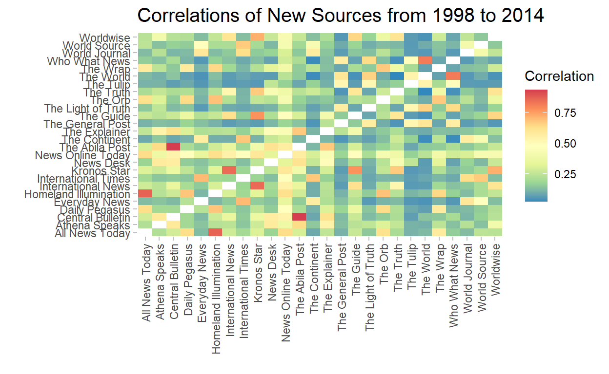

Loading the Libraries
The following libraries will be loade to build the visuals.
Corpora Explorer - To Analyze the Texts by Source
The documents were built into two corpus, one was built according to the source and the other was by the date.
The following two code can be run within R markdown to open the Shiny Application for document exploration by key word.
By source:
all_news_by_source <- df.news %>%
rename("Date"="PUBLISHED")
# This line of code adds in some details of the document in the document view.
all_news_by_source$Text <- paste(all_news_by_source$Date, "\n",
all_news_by_source$AUTHOR, "\n",
all_news_by_source$NOTE, "\n",
all_news_by_source$Text)
all_news_by_source <- all_news_by_source %>%
select(-Date)
news_corpus_source <- prepare_data(
dataset = all_news_by_source,
date_based_corpus = F,
grouping_variable = "SOURCE")
explore(news_corpus_source)
Snapshot of Corpus by Source
knitr::include_graphics('images/5-Corpus.png')

By Date:
all_news_by_date <- df.news %>%
rename("Date"="PUBLISHED") %>%
mutate(Date = date(Date))
# This line of code adds in some details of the document in the document view.
all_news_by_date$Text <- paste(all_news_by_date$SOURCE,
": \n",
all_news_by_date$AUTHOR,
"\n",
all_news_by_date$Text)
news_corpus_date <- prepare_data(
dataset = all_news_by_date,
date_based_corpus = T,
grouping_variable = "SOURCE")
explore(news_corpus_date)
Snapshot of Corpus by Date

Building the Visuals for Question 1
For building the text network, the visTextNet function was used.
The function does the following:
- calculates the term frequency inverse document frequency of each word;
- creates a weighted adjacency matrix where the rows and columns are the groups and the cells describe the sum of overlapping TFIDF between them;
- creates an igraph object from this adjacency matrix.
Editing Functions
The functions retrieved from GitHub were re-edited for building the text visuals:
VisTextNet_e <- function(text_network, alpha = .25, label_degree_cut=0, betweenness=FALSE){
if (igraph::has.multiple(text_network))
stop("textnets does not yet support multiple edges")
if (is.null(V(text_network)$name)){
text_network <- set_vertex_attr(text_network, "name", value = as.character(1:vcount(text_network)))
}
#create network backbone
e <- cbind(igraph::as_data_frame(text_network)[, 1:2 ],
weight = E(text_network)$weight)
# in
w_in <- graph.strength(text_network, mode = "in")
w_in <- data.frame(to = names(w_in), w_in, stringsAsFactors = FALSE)
k_in <- degree(text_network, mode = "in")
k_in <- data.frame(to = names(k_in), k_in, stringsAsFactors = FALSE)
e_in <- e %>%
left_join(w_in, by = "to") %>%
left_join(k_in, by = "to") %>%
mutate(alpha_in = (1-(weight/w_in))^(k_in-1))
# out
w_out <- graph.strength(text_network, mode = "out")
w_out <- data.frame(from = names(w_out), w_out, stringsAsFactors = FALSE)
k_out <- degree(text_network, mode = "out")
k_out <- data.frame(from = names(k_out), k_out, stringsAsFactors = FALSE)
e_out <- e %>%
left_join(w_out, by = "from") %>%
left_join(k_out, by = "from") %>%
mutate(alpha_out = (1-(weight/w_out))^(k_out-1))
e_full <- left_join(e_in, e_out, by = c("from", "to", "weight"))
e_full <- e_full %>%
mutate(alpha = ifelse(alpha_in < alpha_out, alpha_in, alpha_out)) %>%
select(from, to, alpha)
E(text_network)$alpha <- e_full$alpha
pruned <- delete.edges(text_network, which(E(text_network)$alpha >= alpha))
pruned <- delete.vertices(pruned, which(degree(pruned) == 0))
# make degree for labelling most popular nodes
V(pruned)$degree <- degree(pruned)
# remove isolates
isolates <- V(pruned)[degree(pruned)==0]
pruned <- delete.vertices(pruned, isolates)
# calculate modularity for coloring
communities <- cluster_louvain(pruned)
#Cluster Lovain grouping was used for community detection as any text network is large in nature.
#calculate betweenness for sizing nodes
size <- 25 #default 25
if(betweenness){
size <- betweenness(pruned)
size <- size/0.95
}
V(pruned)$community <- communities$membership
V(pruned)$degree <- degree(pruned)
## Changed Code:
nodes <- data.frame(id = V(pruned)$name,
title = paste0("Degree of Node: <br>",
V(pruned)$degree),
group = V(pruned)$community,
size = size
)
nodes <- nodes[order(nodes$id, decreasing = F),]
nodes$shadow <- TRUE
nodes <- nodes %>% mutate(font.size = 20, font.weight= 900)
nodes$color.highlight.background <- "brown"
edges <- get.data.frame(pruned, what="edges")[1:2]
edges$value <- E(pruned)$weight
nodes$color.highlight.background <- "brown"
visNetwork(nodes, edges) %>%
visLayout(randomSeed = 123) %>%
visOptions(highlightNearest = TRUE,
nodesIdSelection = TRUE,
selectedBy = "group") %>%
visNodes(labelHighlightBold = T, size=20) %>%
visIgraphLayout(layout = 'layout.davidson.harel') %>%
visInteraction(multiselect = TRUE)
}
Similarly the Text Communities function was changed so as to return a dataframe of the communities and the names:
TextComm_e <- function(text_network, alpha = .25, label_degree_cut=0, betweenness=FALSE){
if (igraph::has.multiple(text_network))
stop("textnets does not yet support multiple edges")
if (is.null(V(text_network)$name)){
text_network <- set_vertex_attr(text_network, "name", value = as.character(1:vcount(text_network)))
}
#create network backbone
e <- cbind(igraph::as_data_frame(text_network)[, 1:2 ],
weight = E(text_network)$weight)
# in
w_in <- graph.strength(text_network, mode = "in")
w_in <- data.frame(to = names(w_in), w_in, stringsAsFactors = FALSE)
k_in <- degree(text_network, mode = "in")
k_in <- data.frame(to = names(k_in), k_in, stringsAsFactors = FALSE)
e_in <- e %>%
left_join(w_in, by = "to") %>%
left_join(k_in, by = "to") %>%
mutate(alpha_in = (1-(weight/w_in))^(k_in-1))
# out
w_out <- graph.strength(text_network, mode = "out")
w_out <- data.frame(from = names(w_out), w_out, stringsAsFactors = FALSE)
k_out <- degree(text_network, mode = "out")
k_out <- data.frame(from = names(k_out), k_out, stringsAsFactors = FALSE)
e_out <- e %>%
left_join(w_out, by = "from") %>%
left_join(k_out, by = "from") %>%
mutate(alpha_out = (1-(weight/w_out))^(k_out-1))
e_full <- left_join(e_in, e_out, by = c("from", "to", "weight"))
e_full <- e_full %>%
mutate(alpha = ifelse(alpha_in < alpha_out, alpha_in, alpha_out)) %>%
select(from, to, alpha)
E(text_network)$alpha <- e_full$alpha
pruned <- delete.edges(text_network, which(E(text_network)$alpha >= alpha))
pruned <- delete.vertices(pruned, which(degree(pruned) == 0))
# make degree for labelling most popular nodes
V(pruned)$degree <- degree(pruned)
# remove isolates
isolates <- V(pruned)[degree(pruned)==0]
pruned <- delete.vertices(pruned, isolates)
communities <- cluster_louvain(pruned)
V(pruned)$community <- communities$membership
## Changed Code:
output <- data.frame(cbind(communities$names,
communities$membership))
names(output)<-c("SOURCE","Membership")
return(output)
}
Creating the VisNetwork for Texts
- First, the common words are sieved out. This will included words such as GasTech, POK, that might skew the data.This data frame will be called
common_words
common_words <- df.news %>%
unnest_tokens(word,Text) %>%
anti_join(stop_words) %>%
count(word) %>%
filter(n>200) %>%
mutate(lexicon = "CUSTOM")
- Bind it to the
stop_wordsdataframe
stop_words2 <- stop_words %>%
bind_rows(common_words)
Next, we will create two dataframe. One from 1998 - 2014 (for analysis purpose), and the other in 2014(solely for exploratory purpose)
This is done as new sources such as “Modern Rubicon”, “Centrum Sentinel” and “Tethy News” will solely reporting in 2014 i.e. the kidnapping event.
In addition to that, some news sources such as “The International Times” were reporting as early as 1982.
To prevent skewing of the data, the period was split into such.
Other notions for the lines of code are marked as comments in the code chunk below:
clean_news_before <- df.news %>%
filter(1998 <= year(PUBLISHED),
year(PUBLISHED)<2014) %>%
select(SOURCE, Text) %>%
mutate(Text = gsub("\\d+", " ", Text)) %>% # Remove any digits
mutate(Text = str_to_lower(Text)) %>% # Make all lower case
unnest_tokens(word, Text) %>%
anti_join(stop_words2) %>% # antijoin will preserve all words that appear in df.news that do not appear in stop_word
group_by(SOURCE) %>%
summarise(word = paste(word, collapse = ",")) # So that each new source is a single row and the column word contains all the words across the articules
clean_news_2014 <- df.news %>%
filter(year(PUBLISHED)==2014) %>%
select(SOURCE, Text) %>%
mutate(Text = gsub("\\d+", " ", Text)) %>%
mutate(Text = str_to_lower(Text)) %>%
unnest_tokens(word, Text) %>%
anti_join(stop_words2) %>%
group_by(SOURCE) %>%
summarise(word = paste(word, collapse = ","))
- Building the Text Network object for the period 1998-2014
text_grouped <- clean_news_before %>%
group_by(SOURCE)
news_before <- PrepText(text_grouped,
groupvar = "SOURCE",
textvar = "word",
node_type = "groups",
tokenizer = "words",
pos = "nouns",
remove_stop_words = TRUE,
compound_nouns = TRUE)
text_network_before <- CreateTextnet(news_before)
- Visualising the Text Network
set.seed(390)
VisTextNet_e(text_network_before)
- Building the Text Network object for the period 2014
text_grouped2 <- clean_news_2014 %>% group_by(SOURCE)
new_2014 <- PrepText(text_grouped2,
groupvar = "SOURCE",
textvar = "word",
node_type = "groups",
tokenizer = "words",
pos = "nouns",
remove_stop_words = TRUE,
compound_nouns = TRUE)
text_network_2014 <- CreateTextnet(new_2014)
- Visualising the Text Network
set.seed(99)
VisTextNet_e(text_network_2014, label_degree_cut = 0)
Creating the Correlation Plot of Sources
The correlation plot will give an idea of the most similiar new sources based on the word and their counts.
As we did before, they will be split into two time periods, while the latter is more for exploration purposes.
- Create the dataframe of the counts
clean_news_before_count <- df.news %>%
filter(1998 <= year(PUBLISHED),
year(PUBLISHED)<2014) %>%
select(SOURCE, Text) %>%
mutate(Text = gsub("\\d+", " ", Text)) %>%
mutate(Text = str_to_lower(Text)) %>%
unnest_tokens(word, Text) %>%
anti_join(stop_words2) %>%
group_by(SOURCE, word) %>%
summarise(count = n()) %>%
ungroup()
knitr::kable(sample_n(clean_news_before_count,10), "simple")
| SOURCE | word | count |
|---|---|---|
| World Source | dispatched | 1 |
| Everyday News | detergent | 1 |
| Kronos Star | car | 2 |
| Homeland Illumination | plan | 1 |
| The Wrap | griffith | 1 |
| The Tulip | contributed | 1 |
| The Guide | master | 1 |
| The World | times | 1 |
| News Online Today | improve | 1 |
| The Abila Post | leveled | 1 |
- Create the correlation dataframe
newsgroup_cors <- clean_news_before_count %>%
pairwise_cor(SOURCE,
word,
count,
sort = TRUE)
knitr::kable(sample_n(newsgroup_cors,5), "simple")
| item1 | item2 | correlation |
|---|---|---|
| News Online Today | The Wrap | 0.3988099 |
| Everyday News | Homeland Illumination | 0.1211655 |
| World Source | The Abila Post | 0.1979165 |
| The Orb | Homeland Illumination | 0.6888076 |
| The Light of Truth | The World | 0.6575972 |
- Creating the ggplot object
corr_plot_before <- ggplot(newsgroup_cors) +
geom_tile(aes(x=item1, y=item2, fill=correlation)) +
scale_fill_distiller(palette = "Spectral") +
labs(x = "",
y=" ",
title = "Correlations of New Sources from 1998 to 2014",
fill = "Correlation") +
theme(axis.text.x = element_text(angle = 90,
vjust = 0.5,
hjust=1),
panel.background = element_rect(fill="white"),
panel.grid.major.y = element_blank(),
panel.grid.major.x = element_blank(),
axis.ticks = element_line(color = "grey"),
plot.title = element_text(size=15)
) #+
#ggsave(filename = "images/1-corrplot.png",
# width = 20,
# units = "cm")
corr_plot_before

- Repeat the same for 2014
clean_news_2014_count <- df.news %>%
filter(year(PUBLISHED) == 2014, month(PUBLISHED)==1) %>%
select(SOURCE, Text) %>%
mutate(Text = gsub("\\d+", " ", Text)) %>%
mutate(Text = str_to_lower(Text)) %>%
unnest_tokens(word, Text) %>%
anti_join(stop_words2) %>%
group_by(SOURCE, word) %>%
summarise(count = n())
newsgroup_cors_2014 <- clean_news_2014_count %>%
pairwise_cor(SOURCE,
word,
count,
sort = TRUE)
corr_plot_2014 <- ggplot(newsgroup_cors_2014) +
geom_tile(aes(x=item1, y=item2, fill=correlation)) +
theme(axis.text.x = element_text(angle = 90,
vjust = 0.5,
hjust=1)) +
scale_fill_distiller(palette = "Spectral") +
labs(x = "",
y=" ",
title = "Correlations of New Sources in 2014",
fill = "Correlation") +
theme(panel.background = element_rect(fill="white"),
panel.grid.major.y = element_blank(),
panel.grid.major.x = element_blank(),
axis.ticks = element_line(color = "grey"),
plot.title = element_text(size=15)
) #+
#ggsave(filename = "images/1-corrplot2.png",
# width = 20,
# units = "cm")
#corr_plot_2014
Understanding the Author’s Links
- Create the Author table
author_links <- df.news %>%
group_by(SOURCE,AUTHOR) %>%
summarise(Count = n()) %>%
drop_na(AUTHOR) %>%
rename("from" = "AUTHOR",
"to"="SOURCE",
"value"="Count")
knitr::kable(head(author_links,5))
| to | from | value |
|---|---|---|
| All News Today | Petrus Gerhard | 1 |
| Athena Speaks | Haneson Ngohebo | 1 |
| Homeland Illumination | Maha Salo | 46 |
| Homeland Illumination | Petrus Gerhard | 18 |
| Kronos Star | Cato Rossini | 1 |
- Create the visNetwork object
g_author <- graph_from_data_frame(author_links, directed=F)
data_author <- toVisNetworkData(g_author)
data_author$nodes$color <- ifelse(data_author$nodes$id %in%
c("The Explainer",
"Athena Speaks",
"News Desk",
"The Abila Post"),
"#ffff00",
ifelse(data_author$nodes$id %in%
c("Kronos Star"),
"#7be141",
ifelse(data_author$nodes$id %in%
c("News Online Today",
"Homeland Illumination",
"All News Today"),
"#97c2fc",
"#e0e0e0")
)
)
visNetwork(data_author$nodes,
data_author$edges) %>%
visIgraphLayout() %>%
visNodes(font = list(size =18),
size = 20)
TF-IDF of News sources
Set up the re-order func that is able to sort the facet’s in descending order
Link
reorder_within <- function(x, by, within, fun = mean, sep = "___", ...) {
new_x <- paste(x, within, sep = sep)
stats::reorder(new_x, by, FUN = fun)
}
scale_x_reordered <- function(..., sep = "___") {
reg <- paste0(sep, ".+$")
ggplot2::scale_x_discrete(labels = function(x) gsub(reg, "", x), ...)
}
scale_y_reordered <- function(..., sep = "___") {
reg <- paste0(sep, ".+$")
ggplot2::scale_y_discrete(labels = function(x) gsub(reg, "", x), ...)
}
- Create the TF-IDF Dataframe using the
tidytextpackage:
tf_idf <- df.news %>%
filter(1998 <= year(PUBLISHED),
year(PUBLISHED)<2014) %>%
mutate(Text = gsub("\\d+", " ", Text)) %>%
mutate(Text = str_to_lower(Text)) %>%
unnest_tokens(word, Text) %>%
anti_join(stop_words2) %>%
group_by(SOURCE, word) %>%
count() %>%
ungroup() %>%
bind_tf_idf(word, SOURCE, n) %>%
group_by(SOURCE) %>%
top_n(7,wt=tf_idf)
sample_n(tf_idf,5)
# A tibble: 130 x 6
# Groups: SOURCE [26]
SOURCE word n tf idf tf_idf
<chr> <chr> <int> <dbl> <dbl> <dbl>
1 All News Today cleanup 3 0.00291 2.16 0.00628
2 All News Today didn 3 0.00291 2.16 0.00628
3 All News Today protectors 15 0.0145 0.486 0.00706
4 All News Today series 4 0.00388 1.65 0.00640
5 All News Today henk 4 0.00388 1.47 0.00569
6 Athena Speaks flight 4 0.00354 3.26 0.0115
7 Athena Speaks carol 7 0.00619 3.26 0.0202
8 Athena Speaks dob 11 0.00973 1.47 0.0143
9 Athena Speaks elan 6 0.00531 3.26 0.0173
10 Athena Speaks shown 12 0.0106 2.16 0.0229
# ... with 120 more rows- Using the
TextComm_efunction earlier, we will create a dataframe of the communities
wc_comms <- TextComm_e(text_network = text_network_before)
knitr::kable(wc_comms %>% group_by(Membership) %>% sample_n(2))
| SOURCE | Membership |
|---|---|
| Daily Pegasus | 1 |
| The Orb | 1 |
| Kronos Star | 2 |
| Worldwise | 2 |
| The Abila Post | 3 |
| The Explainer | 3 |
| World Source | 4 |
| World Journal | 4 |
| The World | 5 |
| The Light of Truth | 5 |
- Join to the
tf_idfdataframe
com_tf_idf <- inner_join(tf_idf,
wc_comms,
by=c("SOURCE")
)
knitr::kable(sample_n(com_tf_idf %>% ungroup(),5))
| SOURCE | word | n | tf | idf | tf_idf | Membership |
|---|---|---|---|---|---|---|
| Everyday News | caramel | 15 | 0.0106686 | 3.258097 | 0.0347592 | 4 |
| International News | officers | 5 | 0.0083612 | 1.312186 | 0.0109715 | 2 |
| The World | cato | 3 | 0.0066815 | 1.466337 | 0.0097974 | 5 |
| Everyday News | bottoms | 5 | 0.0035562 | 2.159484 | 0.0076795 | 4 |
| The World | relationship | 3 | 0.0066815 | 1.466337 | 0.0097974 | 5 |
- Create the ggplot object
p <- com_tf_idf %>%
ggplot(aes(reorder_within(word,
tf_idf,
SOURCE),
tf_idf,
fill = Membership)) +
geom_bar(stat = 'identity',color='black', size=0.1) +
scale_x_reordered() +
coord_flip() +
facet_wrap(~SOURCE, scales = "free_y", ncol = 7) +
scale_fill_manual(values=c("1"='#97c2fc',
"2"="#7be141",
"3"="#ffff00",
"4"='#fb7e81',
"5"='#eb7df4')) +
labs(x='',y='', title = "TF-IDF") +
theme(axis.title.x = element_blank(),
axis.text.x = element_blank(),
axis.ticks.x = element_blank(),
panel.background = element_rect(fill="white"),
strip.background =element_rect(fill="white"),
plot.title = element_text(size=16, margin=margin(0,0,5,0), hjust=0.5)
)
#p
Average No. of Words Per Source
df.news %>%
filter(1998 <= year(PUBLISHED), year(PUBLISHED)<2014) %>%
unnest_tokens(word,Text) %>%
filter(!(SOURCE %in% c("Tethys News", "Centrum Sentinel", "Modern Rubicon"))) %>%
group_by(SOURCE) %>%
count(FILE, SOURCE) %>%
summarise(avg_word = mean(n)) %>%
ungroup() %>%
left_join(wc_comms) %>%
arrange(Membership, desc(avg_word)) %>%
mutate(SOURCE2 = factor(SOURCE, levels=SOURCE)) %>%
ggplot(aes(avg_word,SOURCE2,fill=Membership)) +
geom_col(color='black', size=0.5) +
scale_fill_manual(values=c("1"='#97c2fc',
"2"="#7be141",
"3"="#ffff00",
"4"='#fb7e81',
"5"='#eb7df4')) +
labs(x = "Average No. of Words",
y = element_blank(),
title = "Average No. of Words in each News Source") +
theme(panel.background = element_rect(fill="white"),
panel.grid.major.x = element_line("#d6d6d6"),
axis.text = element_text(size = 10, color="black"),
plot.title = element_text(size=15, margin=margin(0,0,30,0))
) #+

#ggsave('images/5-1-2.png')
Building the Visuals for Question 2
Bi-Gram Plots by Source
- Create the dataframe for the ngrams
g_before_ngrams <- df.news %>%
filter(1998 <= year(PUBLISHED),
year(PUBLISHED)<2014) %>%
select(SOURCE, Text) %>%
mutate(Text = gsub("\\d+", " ", Text)) %>%
mutate(Text = str_to_lower(Text)) %>%
unnest_tokens(word, Text) %>%
anti_join(stop_words) %>%
group_by(SOURCE) %>%
summarise(word = paste(word, collapse = ",")) %>%
ungroup() %>%
unnest_tokens(word, word, token="ngrams", n=2) %>%
filter(word != 'NA') %>%
separate(word, c("word1", "word2"), sep = " ") %>%
group_by(SOURCE, word1, word2) %>%
summarise(n=n()) %>%
ungroup() %>%
group_by(SOURCE) %>%
top_n(n=50, wt=n) %>%
relocate(SOURCE, .after = last_col()) %>%
rename("from"="word1",
"to"="word2",
"value"="n",
"group"="SOURCE")
knitr::kable(sample_n(g_before_ngrams %>% ungroup,5))
| from | to | value | group |
|---|---|---|---|
| article | installment | 3 | The Orb |
| developing | country | 1 | The World |
| practice | medicine | 2 | Kronos Star |
| declaration | government | 2 | The Explainer |
| international | founded | 1 | The World |
- Feed into a for-loop to create the plots per source.
for (i in unique(g_before_ngrams$group)){
e <- g_before_ngrams %>%
filter(group ==i)
n <- e %>%
ungroup() %>%
select(from, to, group) %>%
pivot_longer(cols=c("from","to")) %>%
left_join(get_sentiments("bing"), by=c("value"="word")) %>%
replace_na(replace = list(sentiment = "none")) %>%
mutate(color = ifelse(sentiment=="negative", "blue",
ifelse(sentiment=="none", "grey",
"red"))) %>%
select(value, color) %>%
rename("id" = "value") %>%
group_by(id,color) %>%
summarise(n=n())
n$label <- n$id
p<-visNetwork(n=n,
edges = e,
main = list(text = paste("News Source: ",i),
style = "font-family:Verdana;font-weight:600;color:#000000;font-size:20px;text-align:center;")
) %>%
visEdges(arrows = "middle") %>%
visNodes(font = list(size =34, style="font-weight:600")) %>%
visIgraphLayout(physics = F) %>%
visOptions(highlightNearest = T,
nodesIdSelection = T) %>%
visInteraction(multiselect = TRUE)
show(p)
}
Extension of the above for-loop to sieve out the primary sources and also identify paired word with key words such as “Gastech”, “POK”.
First a new dataset will be created
g_before_ngrams2as the line of code, commented out below, is removed.
g_before_ngrams2 <- df.news %>%
filter(1998 <= year(PUBLISHED),
year(PUBLISHED)<2014) %>%
select(SOURCE, Text) %>%
mutate(Text = gsub("\\d+", " ", Text)) %>%
mutate(Text = str_to_lower(Text)) %>%
unnest_tokens(word, Text) %>%
anti_join(stop_words) %>%
group_by(SOURCE) %>%
summarise(word = paste(word, collapse = ",")) %>%
ungroup() %>%
unnest_tokens(word, word, token="ngrams", n=2) %>%
filter(word != 'NA') %>%
separate(word, c("word1", "word2"), sep = " ") %>%
group_by(SOURCE, word1, word2) %>%
summarise(n=n()) %>%
ungroup() %>%
group_by(SOURCE) %>%
#top_n(n=30, wt=n) %>%
relocate(SOURCE, .after = last_col()) %>%
rename("from"="word1",
"to"="word2",
"value"="n",
"group"="SOURCE")
For Homeland Illumination, Kronos Star, and The Abila Post, we will use the filter marked as --1. For The World, and International Times we will use the filter marked as --2.
These filtered datasets will be saved as g_before_ngrams_specific
g_before_ngrams_specific <- g_before_ngrams2 %>%
filter(group=="International Times") %>% # -- Change
#filter(from %in% c("pok","elodis","police","government")| to %in% c("pok","elodis","police","government")) # -- 1
filter(from %in% c("gastech","international", "kronos","sanjorge","pok","elodis","protector")| to %in% c("gastech","international","kronos", "sanjorge","pok","elodis","protector")) # -- 2
e <- g_before_ngrams_specific
n <- e %>%
ungroup() %>%
select(from, to, group) %>%
pivot_longer(cols=c("from","to")) %>%
left_join(get_sentiments("bing"), by=c("value"="word")) %>%
replace_na(replace = list(sentiment = "none")) %>%
mutate(color.background = ifelse(sentiment=="negative", "blue",
ifelse(sentiment=="none", "grey",
"red"))) %>%
select(value, color.background) %>%
rename("id" = "value") %>%
group_by(id,color.background) %>%
summarise(n=n())
n$label <- n$id
n$color.highlight.background <- "brown"
n$color.border <- "black"
e$color <- "gray"
p<-visNetwork(n = n,
edges = e,
main = list(text = paste("News Source: ",unique(e$group)),
style = "font-family:Verdana;font-weight:600;color:#000000;font-size:20px;text-align:center;")
) %>%
visEdges(arrows = "middle", color = list(highlight = "brown")) %>%
visNodes(font = list(size =34, style="font-weight:600")) %>%
visIgraphLayout(physics = F, layout = "layout_nicely") %>%
visOptions(highlightNearest = list(enabled = T,
algorithm = "all",
degree = 0),
nodesIdSelection = T
) %>%
visInteraction(multiselect = TRUE)
set.seed(390)
p
Word Cloud by Communities
- Create a DTM Corpus i.e. Source and their word counts. This would be the same dataset as we created for the correlation plot.
dtm_corpus <- df.news %>%
filter(1998 <= year(PUBLISHED),
year(PUBLISHED)<2014) %>%
select(SOURCE, Text) %>%
mutate(Text = gsub("\\d+", " ", Text)) %>%
mutate(Text = str_to_lower(Text)) %>%
unnest_tokens(word, Text) %>%
anti_join(stop_words2) %>%
group_by(SOURCE, word) %>%
summarise(count = n()) %>%
inner_join(wc_comms)
knitr::kable(sample_n(dtm_corpus %>% ungroup(),5), caption = "Snapshot of dtm_corpus")
| SOURCE | word | count | Membership |
|---|---|---|---|
| The Guide | hard | 1 | 2 |
| News Online Today | vehicle | 5 | 1 |
| The Guide | animate | 1 | 2 |
| The Continent | gala | 1 | 4 |
| The Tulip | cofounder | 1 | 5 |
- Feed into a for-loop to generate a WordCloud for each of the communities
for (i in unique(dtm_corpus$Membership)){
dtm_model <- dtm_corpus %>%
filter(Membership==i) %>%
cast_dtm(SOURCE, word, count)
lda_topics <- LDA(dtm_model,
k=2,
method="Gibbs",
control = list(seed=333)) %>%
tidy(matrix = "beta")
sources <- wc_comms %>%
filter(Membership==i) %>%
select(SOURCE)
word_probs <- lda_topics %>%
group_by(topic) %>%
top_n(10, beta) %>%
ungroup() %>%
mutate(term2 = fct_reorder(term, beta))
p <- ggwordcloud(word_probs$term,
freq = word_probs$beta,
colors = word_probs$topic) +
labs(title = paste("Wordcloud for Cluster: ", i),
subtitle = paste(unlist(sources), collapse = ', ')) +
theme(plot.title = element_text(hjust = 0.5, size=14),
plot.subtitle = element_text(hjust = 0.5, size=12))
#show(p)
#ggsave(paste('images/5-1-6-',i,".png",sep = ''))
}
Building the Visuals for Question 3
Creating the email Network, communities by Department
This network will show an overview of the employees and conversations within their departments.
- First we will set up the links,
links, and nodes,nodes_df
Links:
links <- df.emails %>%
mutate(To = str_split(To,pattern=',')) %>%
unnest_longer(To) %>%
mutate(To = str_trim(To),
From = str_trim(From)) %>%
filter(!(From==To)) %>%
group_by(From, To) %>%
summarise(count=n()) %>%
rename(weight = count)
knitr::kable(head(links,5))
| From | To | weight |
|---|---|---|
| Ada Campo-Corrente | Felix Resumir | 2 |
| Ada Campo-Corrente | Ingrid Barranco | 8 |
| Ada Campo-Corrente | Orhan Strum | 9 |
| Ada Campo-Corrente | Ruscella Mies Haber | 1 |
| Ada Campo-Corrente | Sten Sanjorge Jr | 16 |
Nodes:
nodes_df <- data.frame(id = unique(c(links$From, links$To))) %>%
left_join(df.emp, by = c("id"="FullName")) %>%
select(c(id,
CurrentEmploymentTitle,
CurrentEmploymentType)) %>%
rename(title = CurrentEmploymentTitle,
department = CurrentEmploymentType) %>%
replace_na(list(department = "Executive",
title = "CEO"))
knitr::kable(head(nodes_df,5))
| id | title | department |
|---|---|---|
| Ada Campo-Corrente | SVP/CIO | Executive |
| Adan Morlun | Truck Driver | Facilities |
| Adra Nubarron | Geologist | Engineering |
| Albina Hafon | Truck Driver | Facilities |
| Anda Ribera | Assistant to CFO | Administration |
- Next, the following code chunk will create the visNetwork
email_network <- graph_from_data_frame(d = links,
vertices = nodes_df
)
email_network <- simplify(email_network)
nodes <- data.frame(id = V(email_network)$name,
title = V(email_network)$name,
group = V(email_network)$department)
edges <- get.data.frame(email_network, what="edges")[1:2]
edges$value <- links$weight
#edges$color.opacity <- 0.8
#edges$color.highlight <- "red"
nodes$color.highlight.background <- "brown"
nodes <- nodes %>% mutate(font.size = 25,
font.weight= 1000)
lnodes <- data.frame(shape = rep('square',6),
label = c("Executive",
"Facilities",
"Engineering",
"Administration",
"Security",
"Information Technology"),
color.background = c("#FB7E81",
"#7BE141",
"#FFFF00",
"#97C2FC",
"#AD85E4",
"#EB7DF4"),
color.border = rep('black',6),
font.align = rep("center",6),
font.size = rep(20,6)
)
p <- visNetwork(nodes = nodes,
edges = edges) %>%
visOptions(highlightNearest = list(enabled = T, degree = 1),
nodesIdSelection = T,
selectedBy = "group"
) %>%
visEdges(width = 0.01,length = 10, scaling = list(min=0.1,max=3)) %>%
visLayout(randomSeed = 123) %>%
visNodes(labelHighlightBold = T) %>%
#visPhysics(stabilization = 5,
# barnesHut = list(springLength =230, avoidOverlap=0.2),
# forceAtlas2Based = list(gravitaionalConstant = -100,
# centralGravity = 0.5)) %>%
visIgraphLayout(layout = "layout_nicely") %>%
visInteraction(multiselect = TRUE) %>%
visLegend(enabled = T) %>%
visGroups(groupname = "Executive",
# Red
color = list(border = "#FA0A10",
background = "#FB7E81",
highlight = list(border = "#FA0A10", background = "#FB7E81"),
hover = list(background = "#FA0A10", border = "#FB7E81")
)) %>%
visGroups(groupname = "Facilities",
# Green
color = list(border = "#41A906",
background = "#7BE141",
highlight = list(border = "#41A906", background = "#7BE141"),
hover = list(background = "#41A906", border = "#7BE141")
)) %>%
visGroups(groupname = "Engineering",
# Yellow
color = list(border = "#FFA500",
background = "#FFFF00",
highlight = list(border = "#FFA500", background = "#FFFF00"),
hover = list(background = "#FFA500", border = "#FFFF00")
)) %>%
visGroups(groupname = "Administration",
# Blue
color = list(border = "#2B7CE9",
background = "#97C2FC",
highlight = list(border = "#2B7CE9", background = "#97C2FC"),
hover = list(background = "#2B7CE9", border = "#97C2FC")
)) %>%
visGroups(groupname = "Security",
# Purple
color = list(border = "#7C29F0",
background = "#AD85E4",
highlight = list(border = "#7C29F0", background = "#AD85E4"),
hover = list(background = "#7C29F0", border = "#AD85E4")
)) %>%
visGroups(groupname = "Information Technology",
# Magenta
color = list(border = "#E129F0",
background = "#EB7DF4",
highlight = list(border = "#E129F0", background = "#EB7DF4"),
hover = list(background = "#E129F0", border = "#EB7DF4")
)) %>%
visLegend(zoom = T, addNodes = lnodes, useGroups = F)
Creating the email Network, communities by Weight i.e. frequency of email correspondence
email_network_wt <- graph_from_data_frame(d = links,
vertices = nodes_df,
directed = T)
wt_comm <- edge.betweenness.community(email_network_wt,
weights = E(email_network_wt)$weight)
nodes_wt <- data.frame(id = V(email_network_wt)$name,
title = V(email_network_wt)$title,
group = factor(wt_comm$membership))
edges_wt <- get.data.frame(email_network_wt, what="edges")[1:2]
nodes_wt$color.highlight.background <- "brown"
nodes_wt <- nodes_wt %>%
mutate(font.size = 25,
font.weight= 1000)
visNetwork(nodes_wt, edges_wt) %>%
visOptions(highlightNearest = TRUE,
nodesIdSelection = T,
selectedBy = "group"
) %>%
visEdges(width = 0.2) %>%
visIgraphLayout(layout = 'layout_nicely') %>%
visInteraction(multiselect = T) %>%
visLegend(F)
Creating the email Network, communites by Text
- First, we create the dataframe below
emails_grouped. This dataframe contains email correspondence with cleaned and tokenized text.
emails_grouped<- df.emails %>%
mutate(To = str_split(To,pattern=',')) %>%
unnest_longer(To) %>%
mutate(To = str_trim(To),
From = str_trim(From)) %>%
filter(!(From==To)) %>%
unnest_tokens(word, Subject) %>%
anti_join(stop_words) %>%
group_by(From,To) %>%
count(word) %>%
summarise(word = paste(word, collapse = ",")) %>%
ungroup() %>%
group_by(From) %>%
left_join(df.emp, by=c("From"="FullName")) %>%
select(c(From, To, word, CurrentEmploymentType)) %>%
rename(group = CurrentEmploymentType) %>%
replace_na(replace=list(From_dep = "Executive"))
knitr::kable(sample_n(emails_grouped %>% ungroup(),5))
| From | To | word | group |
|---|---|---|---|
| Adan Morlun | Dylan Scozzese | 1,advisory,caution,downtown,drive,effective,facilities,february,guys,ladies,meeting,night,policies,preparations,refueling,text,traffic,union,vip,visit | Facilities |
| Gustav Cazar | Lars Azada | 00,2516,2522,downhole,field,gis,logging,openhole,prediction,results,rotation,schedule,update | Engineering |
| Felix Resumir | Inga Ferro | 20,inspection,january,procedures,request,security,site,vip,visit | Security |
| Minke Mies | Adra Nubarron | awwww,cute | Security |
| Irene Nant | Adan Morlun | advisory,careful,facilities,funny,guys,ladies,list,night,preparations,repairs,toolbox,traffic,truck,vip,visit | Facilities |
- Create the Text Network
email_text <- PrepText(emails_grouped,
groupvar = "From",
textvar = "word",
node_type = "groups",
tokenizer = "words",
compound_nouns = TRUE)
email_text_nt <- CreateTextnet(email_text)
- Re-edit the
VisTextNetfunction to include the coloring of nodes by department
VisTextNet_e_2 <- function(text_network, alpha = .25, label_degree_cut=0, df){
if (igraph::has.multiple(text_network))
stop("textnets does not yet support multiple edges")
if (is.null(V(text_network)$name)){
text_network <- set_vertex_attr(text_network, "name", value = as.character(1:vcount(text_network)))
}
#create network backbone
e <- cbind(igraph::as_data_frame(text_network)[, 1:2 ],
weight = E(text_network)$weight)
# in
w_in <- graph.strength(text_network, mode = "in")
w_in <- data.frame(to = names(w_in), w_in, stringsAsFactors = FALSE)
k_in <- degree(text_network, mode = "in")
k_in <- data.frame(to = names(k_in), k_in, stringsAsFactors = FALSE)
e_in <- e %>%
left_join(w_in, by = "to") %>%
left_join(k_in, by = "to") %>%
mutate(alpha_in = (1-(weight/w_in))^(k_in-1))
# out
w_out <- graph.strength(text_network, mode = "out")
w_out <- data.frame(from = names(w_out), w_out, stringsAsFactors = FALSE)
k_out <- degree(text_network, mode = "out")
k_out <- data.frame(from = names(k_out), k_out, stringsAsFactors = FALSE)
e_out <- e %>%
left_join(w_out, by = "from") %>%
left_join(k_out, by = "from") %>%
mutate(alpha_out = (1-(weight/w_out))^(k_out-1))
e_full <- left_join(e_in, e_out, by = c("from", "to", "weight"))
e_full <- e_full %>%
mutate(alpha = ifelse(alpha_in < alpha_out, alpha_in, alpha_out)) %>%
select(from, to, alpha)
E(text_network)$alpha <- e_full$alpha
pruned <- delete.edges(text_network, which(E(text_network)$alpha >= alpha))
pruned <- delete.vertices(pruned, which(degree(pruned) == 0))
size <- 25
isolates <- V(pruned)[degree(pruned)==0]
pruned <- delete.vertices(pruned, isolates)
nodes <- data.frame(id = V(pruned)$name,
title = paste0("Degree of Node: <br>",
V(pruned)$degree),
size = size
)
nodes<-nodes %>%
left_join(select(df, FullName,CurrentEmploymentType), by= c("id"="FullName")) %>%
rename(group= CurrentEmploymentType) %>%
replace_na(list(group="Executive"))
nodes <- nodes[order(nodes$id, decreasing = F),]
nodes$shadow <- TRUE
nodes <- nodes %>% mutate(font.size = 20, font.weight= 900)
nodes$color.highlight.background <- "brown"
edges <- get.data.frame(pruned, what="edges")[1:2]
edges$value <- E(pruned)$weight
nodes$color.highlight.background <- "brown"
lnodes <- data.frame(shape = rep('square',6),
label = c("Executive",
"Facilities",
"Engineering",
"Administration",
"Security",
"Information Technology"),
color.background = c("#FB7E81",
"#7BE141",
"#FFFF00",
"#97C2FC",
"#AD85E4",
"#EB7DF4"),
color.border = rep('black',6),
font.align = rep("center",6),
font.size = rep(20,6)
)
visNetwork(nodes, edges) %>%
visLayout(randomSeed = 123) %>%
visOptions(highlightNearest = TRUE,
nodesIdSelection = TRUE,
selectedBy = "group") %>%
visNodes(labelHighlightBold = T, size=20) %>%
visEdges(width = 0.01,length = 10, scaling = list(min=0.1,max=3)) %>%
visIgraphLayout(layout = 'layout.davidson.harel') %>%
visInteraction(multiselect = TRUE) %>%
visLegend(zoom = T, addNodes = lnodes, useGroups = F) %>%
visGroups(groupname = "Executive",
# Red
color = list(border = "#FA0A10",
background = "#FB7E81",
highlight = list(border = "#FA0A10", background = "#FB7E81"),
hover = list(background = "#FA0A10", border = "#FB7E81")
)) %>%
visGroups(groupname = "Facilities",
# Green
color = list(border = "#41A906",
background = "#7BE141",
highlight = list(border = "#41A906", background = "#7BE141"),
hover = list(background = "#41A906", border = "#7BE141")
)) %>%
visGroups(groupname = "Engineering",
# Yellow
color = list(border = "#FFA500",
background = "#FFFF00",
highlight = list(border = "#FFA500", background = "#FFFF00"),
hover = list(background = "#FFA500", border = "#FFFF00")
)) %>%
visGroups(groupname = "Administration",
# Blue
color = list(border = "#2B7CE9",
background = "#97C2FC",
highlight = list(border = "#2B7CE9", background = "#97C2FC"),
hover = list(background = "#2B7CE9", border = "#97C2FC")
)) %>%
visGroups(groupname = "Security",
# Purple
color = list(border = "#7C29F0",
background = "#AD85E4",
highlight = list(border = "#7C29F0", background = "#AD85E4"),
hover = list(background = "#7C29F0", border = "#AD85E4")
)) %>%
visGroups(groupname = "Information Technology",
# Magenta
color = list(border = "#E129F0",
background = "#EB7DF4",
highlight = list(border = "#E129F0", background = "#EB7DF4"),
hover = list(background = "#E129F0", border = "#EB7DF4")
)) %>%
visLegend(zoom = T, addNodes = lnodes, useGroups = F)
}
- Create visNetwork object
set.seed(390)
VisTextNet_e_2(email_text_nt, df = df.emp)
Create the Age Plot
- Create a new dataframe
x_full.
This dataframe will contain the department each of the employee in the email is from.
x_full <- df.emails %>%
mutate(To = str_split(To,pattern=',')) %>%
unnest_longer(To) %>%
mutate(To = str_trim(To),
From = str_trim(From)) %>%
filter(!(From==To)) %>%
mutate(Subject2 = str_replace_all(Subject, "[[:punct:]]", " ")) %>%
left_join(select(df.emp, FullName, CurrentEmploymentType, CurrentEmploymentTitle), by=c("From"="FullName")) %>%
replace_na(list(CurrentEmploymentType = "Executive", CurrentEmploymentTitle="CEO")) %>%
rename(From_title = CurrentEmploymentTitle, From_dep = CurrentEmploymentType) %>%
left_join(select(df.emp, FullName, CurrentEmploymentTitle, CurrentEmploymentType), by = c("To"="FullName")) %>%
rename(To_title = CurrentEmploymentTitle, To_dep = CurrentEmploymentType)
knitr::kable(head(x_full,5)) %>%
kableExtra:: kable_paper("hover",
full_width = F,
html_font = "helvetica")
| From | To | Date | Subject | Date.Date | Date.Time | nTo | Subject2 | From_dep | From_title | To_title | To_dep |
|---|---|---|---|---|---|---|---|---|---|---|---|
| Varja Lagos | Hennie Osvaldo | 2014-01-06 10:28:00 | Patrol schedule changes | 2014-01-06 | 10:28:00 | 4 | Patrol schedule changes | Security | Badging Office | Perimeter Control | Security |
| Varja Lagos | Loreto Bodrogi | 2014-01-06 10:28:00 | Patrol schedule changes | 2014-01-06 | 10:28:00 | 4 | Patrol schedule changes | Security | Badging Office | Site Control | Security |
| Varja Lagos | Inga Ferro | 2014-01-06 10:28:00 | Patrol schedule changes | 2014-01-06 | 10:28:00 | 4 | Patrol schedule changes | Security | Badging Office | Site Control | Security |
| Brand Tempestad | Birgitta Frente | 2014-01-06 10:35:00 | Wellhead flow rate data | 2014-01-06 | 10:35:00 | 3 | Wellhead flow rate data | Engineering | Drill Technician | Geologist | Engineering |
| Brand Tempestad | Lars Azada | 2014-01-06 10:35:00 | Wellhead flow rate data | 2014-01-06 | 10:35:00 | 3 | Wellhead flow rate data | Engineering | Drill Technician | Engineer | Engineering |
- Feed into a for-loop to generate the conversation plot_ly object for each employee
for (i in sort(unique(c(x_full$From, x_full$To)))){
dat <- x_full %>%
filter(From==i)
details<- x_full %>%
filter(From == i) %>%
select(From_dep, From_title)
g <- ggplot(dat, aes(y=To, x=Date.Time))+
geom_point(#position=position_dodge(width=1),
size=2, alpha = 0.6, stroke=0.5, shape=21,
aes(text = sprintf("Sub: %s<br>Date: %s<br>To: %s<br>To_Title: %s<br>To_Dep: %s<br>Time Sent: %s<br>",
Subject2,
Date.Date,
To,
To_title,
To_dep,
Date.Time),
)
) +
geom_line(aes(group = Subject2, color= Subject2), size=0.2) +
labs(y="",x="Time",title = paste(i,paste(unique(details), collapse = ',')),
group="",
color="") +
theme(legend.text = element_text(size = 8),
panel.background = element_rect(fill="white"),
panel.grid.major.y = element_line(color="#f0f0f0"),
plot.title = element_text(size=14)
)
gg <- ggplotly(g, tooltip = c("text"))
#show(gg)
}
gg
Creating the Age Comparison Plot
- Create the column of the approximate age, which is 2014 - birth year
df.emp <-df.emp %>%
mutate(Approx_age = 2014 - year(BirthDate))
- Create an dataframe as follow,
age_df
- Create the ggplot object
age_df %>%
ggplot(aes(x = Approx_age, y= FullName2)) +
geom_point(aes(color = CurrentEmploymentType), size=5) +
geom_text(aes(label=FullName2, hjust = hjust), size=3, vjust=0.1)+
scale_x_continuous(breaks = c(20,30,40,50,60))+
labs(y="",x="Time",title = "Approximate Ages of GasTech Employees", color="Department") +
theme(legend.text = element_text(size = 8),
panel.background = element_rect(fill="white"),
panel.grid.major.x = element_line(color="#c9c9c9", linetype = 3),
panel.border = element_rect(color="grey", fill=NA),
plot.title = element_text(size=14),
axis.text.y = element_blank(),
axis.ticks.x = element_blank(),
axis.ticks.y = element_blank()
) #+
#ggsave(filename = 'images/5-Age.png', width = 30, units = "cm")
Creating the Citizenship Chart
citi_link <- df.emp %>%
select(FullName, CitizenshipCountry, CurrentEmploymentType ) %>%
rename(From = FullName,
To = CitizenshipCountry,
group = CurrentEmploymentType)
citi_nodes <- data.frame(id = unique(c(citi_link$From, citi_link$To)))
citi_nodes <- citi_nodes %>%
left_join(select(df.emp, FullName, CurrentEmploymentType), by = c("id"="FullName")) %>%
rename(group = CurrentEmploymentType) %>%
replace_na(list(group="Place"))
citi_nodes$title <- citi_nodes$id
#citi_nodes$color <- ifelse(str_length(citi_nodes$id)==6,"blue","black")
citi_nodes$font.size <- 25
citi_nodes$font.weight <- 1000
citi_g <- graph_from_data_frame(d = citi_link,
vertices = citi_nodes,
directed = T)
data_citi <- toVisNetworkData(citi_g)
lnodes <- data.frame(shape = rep('square',6),
label = c("Executive",
"Facilities",
"Engineering",
"Administration",
"Security",
"Information Technology"),
color.background = c("#FB7E81",
"#7BE141",
"#FFFF00",
"#97C2FC",
"#AD85E4",
"#EB7DF4"),
color.border = rep('black',6),
font.align = rep("center",6),
font.size = rep(20,6)
)
visNetwork(nodes = data_citi$nodes,
edges = data_citi$edges) %>%
visNodes(size=15) %>%
visOptions(highlightNearest = TRUE,
nodesIdSelection = T,
selectedBy = "group"
) %>%
visIgraphLayout(layout = "layout_as_star") %>%
visLegend(zoom = T, addNodes = lnodes, useGroups = F)
Creating the Military Period
- Create new columns
MilitaryStartYearandMilitaryDischargeYearand add it to thedf.empdataframe
- Two charts will be created, one for Kronos and the other for Tethys. The code line marks
--1and--2will be changed to create the new charts.
mil_data<-df.emp %>%
filter(!is.na(MilitaryDischargeYear)) %>%
mutate(ArmyLoc = ifelse(str_detect(MilitaryServiceBranch,"Kronos"),"Kronos","Tethys")) %>%
filter(ArmyLoc == "Kronos")
mil_data %>%
ggplot(aes(y = FullName, x = MilitaryStartYear)) +
geom_point(size=2, color="#81b879") +
geom_point(aes(MilitaryDischargeYear), color="#769ab5", size=2) +
geom_segment(aes(x=MilitaryStartYear, xend=MilitaryDischargeYear, y=FullName,yend=FullName), size=0.5, alpha=0.7) +
scale_x_continuous(breaks = seq(min(mil_data$MilitaryStartYear), max(mil_data$MilitaryDischargeYear), by=2))+
#facet_wrap(~ArmyLoc, scales = "free") +
labs(x = "Year",y ="", title="Time Served in the Military in Kronos")+
theme(panel.background = element_rect(fill ="white"),
panel.grid.major.y = element_line(colour = "grey",linetype = 3),
panel.grid.major.x = element_line(colour = "grey",linetype = 3),
panel.border = element_rect(color="grey", fill=NA),
axis.ticks.x = element_blank(),
axis.ticks.y = element_blank()) #+

#ggsave('images/5-3-2.png',width = 30, units = "cm")
Creating the Year Joined Chart
year_labels <- unique(substr(sort(year(df.emp$CurrentEmploymentStartDate)),3,4))
year_labels[1] <- "1990"
year_labels[20] <- "2013"
df.emp %>%
select(FullName, CurrentEmploymentStartDate, CurrentEmploymentType) %>%
mutate(FullName2 = fct_reorder(FullName,CurrentEmploymentType)) %>%
mutate(Year = year(CurrentEmploymentStartDate )) %>%
mutate(hjust = ifelse(FullName2 =="Sten Sanjorge Jr.", -0.1, 1.05)) %>%
ggplot(aes(x = Year, y= FullName2)) +
geom_point(aes(color = CurrentEmploymentType), size=2) +
geom_text(aes(label=FullName2, hjust = hjust), size=3) +
scale_x_continuous(breaks = sort(unique(year(df.emp$CurrentEmploymentStartDate))), labels = year_labels) +
labs(y="",x="Year",title = "Year Employee of GasTech Joined", color="Department") +
theme(legend.text = element_text(size = 5),
panel.background = element_rect(fill="white"),
panel.grid.major.x = element_line(color="#c9c9c9", linetype = 3),
panel.border = element_rect(color="grey", fill=NA),
plot.title = element_text(size=14),
axis.text.y = element_blank(),
axis.ticks.x = element_blank(),
axis.ticks.y = element_blank()
) +
ggsave('images/5-3-7.png',width = 30, units = "cm")